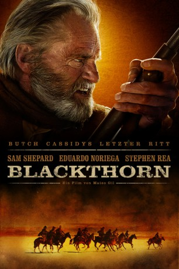

#3 Blackthorn
 
 IMDB-Wertung: 6.6 / 10
IMDB-Wertung: 6.6 / 10  Metascore: 61
Metascore: 61 
In den 20er Jahren des 19. Jahrhunderts beschließt in Bolivien der entgegen offizieller Darstellungen doch nicht tote und unter falschem Namen untergetauchte US-Outlaw Butch Cassidy, einmal noch die alte Heimat sehen zu wollen. Mit seinen Ersparnissen macht er sich auf den Weg, ohne damit zu rechnen, dass ihm immer noch alte Jäger auf den Fersen sind. Unterwegs trifft er einen jungen Outlaw, der ihn stark an einen verflossenen Kumpan erinnert. Doch Eduardo hat eigene Pläne, und eigene Verfolger im Gepäck.
Jahr: 2011
Dauer: 102 Minuten
FSK: 12
Land: Spanien Studio: Ascot Elite Entertainment GroupTonspuren: DTS - ,
Untertitel:
Auflösung: 1080p (1920×816) Größe: 9216 MB
Genre: Action, Abenteuer, Western
Regisseur: Mateo Gil
Drehbuch: Miguel Barros
Soundtrack: Lucio Godoy
Darsteller:
 Sam Shepard als James
Sam Shepard als James Eduardo Noriega als Ing. Eduardo Apodaca
Eduardo Noriega als Ing. Eduardo Apodaca Stephen Rea als Mackinley
Stephen Rea als Mackinley- Magaly Solier als Yana
 Nikolaj Coster-Waldau als James Joven
Nikolaj Coster-Waldau als James Joven- Padraic Delaney als Sundance
 Dominique McElligott als Etta
Dominique McElligott als Etta- Cristian Mercado als General of the Bolivian Army
- Martin Proctor als Caballero inglés
- Fernando Gamarra als Director de banco
- Luis Bredow als Doctor
- Daniel Aguirre als Iván
- María Luque als Tabernera
- Raúl Beltrán als Jefe indígena
- Luis Aduviri als Lugarteniente indígena
- Claudia Coronel als Indígena perseguidora 1
- Erika Andia als Indígena perseguidora 2
- Shirley Torres als Indígena perseguidora 3
- Jorge Hidalgo als Soldado argentino 1
- Daniel Arce als Soldado argentino 2
- Víctor Orihuela als Cajero
- Julio Mita als Hombre anciano
- Delia Fabián als Mujer anciana
- Fernando Pericón als Camarero
- Marcos Soto als Soldado boliviano
- Fernando Peredo als Jefe de estación
- Rodolfo Calaumana als Cliente taberna
- Álex Terán als Cliente taberna
- Alice Guimares als Prostituta
- Karen Maysunga als Prostituta
- Paola Oña als Prostituta
- Tania Watoro als Prostituta
- Ismael Suárez als Perseguidor indígena
- Christian Bautista als Perseguidor indígena
- Ariel Ramos als Perseguidor indígena
- Froilán Paucara als Perseguidor indígena
- María Quispe als Perseguidor indígena
- Andrés Celili als Perseguidor indígena
- Marcos Yucra als Perseguidor indígena
- Andrés Márquez als Perseguidor indígena
- Sandra Rivero als Perseguidor indígena
- Emmanuel Espíritu als Perseguidor indígena
- Eddy Aramayo als Perseguidor indígena
- Maximiliano Ortega als Perseguidor indígena
- Mario Flores als Perseguidor indígena
Datei: X:\HD-Western-2000-2015\Blackthorn (2011, FSK12, 1920x816).mkv seit 15.01.2015
Festplatte: HD Eastern+Western
 Es gibt insgesamt 61 Filme in der Gruppe 'HD-Western-2000-2015'
Es gibt insgesamt 61 Filme in der Gruppe 'HD-Western-2000-2015'